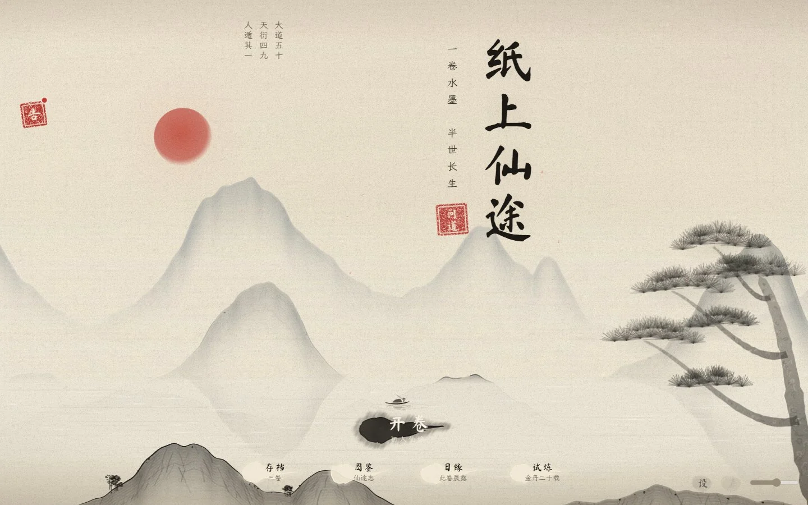
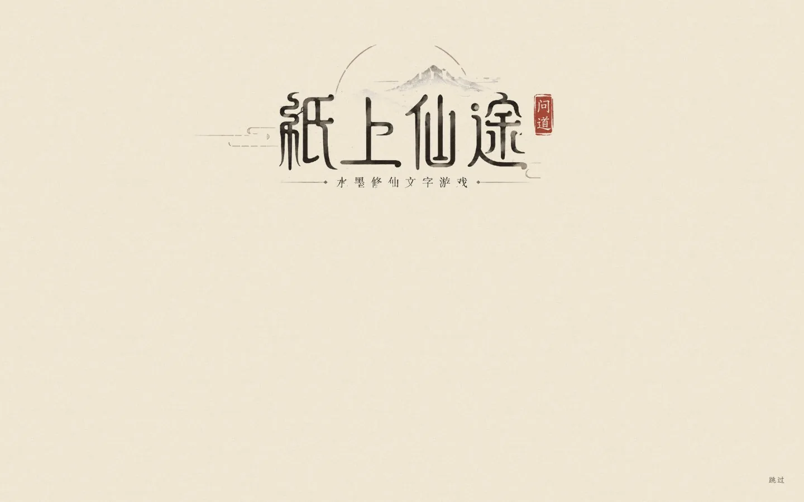
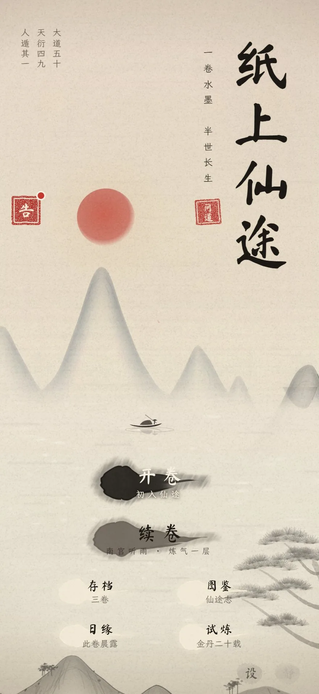
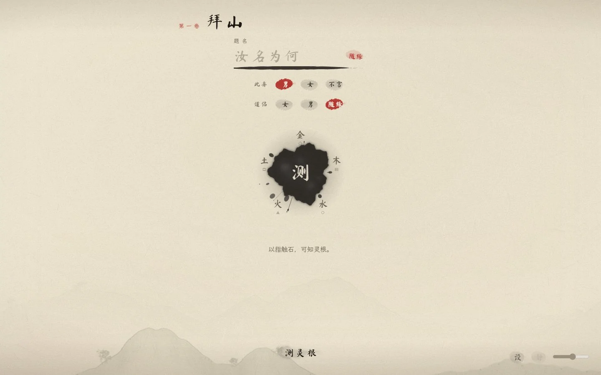
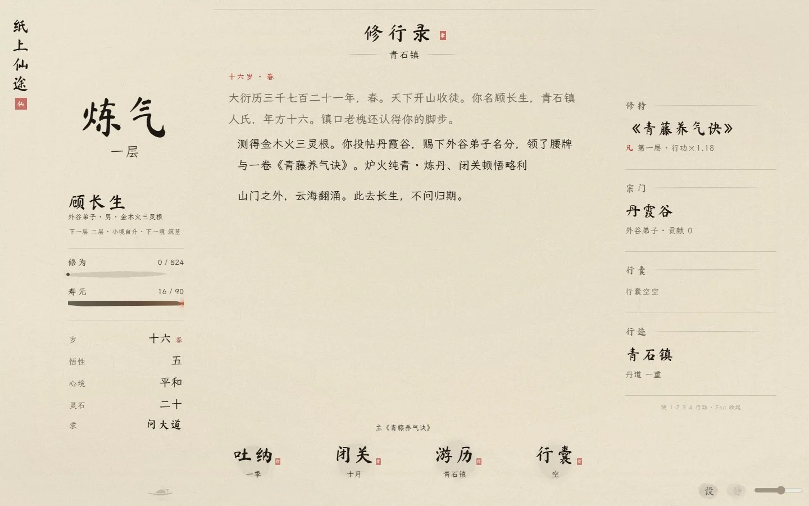
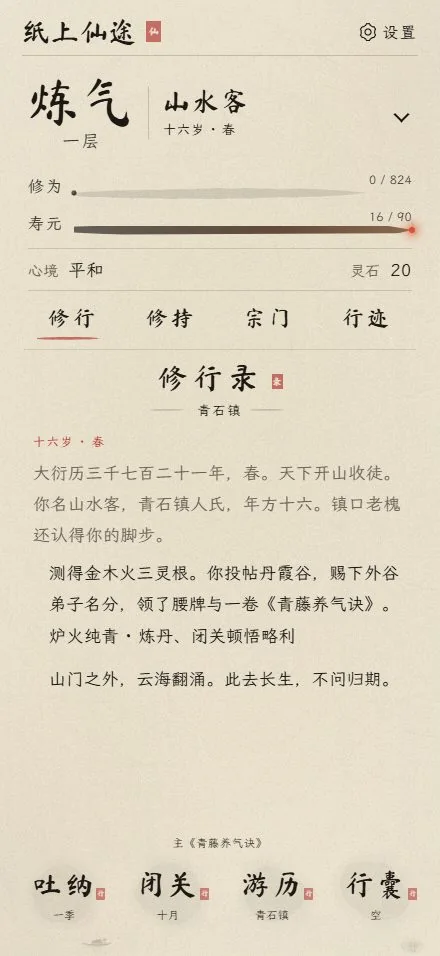
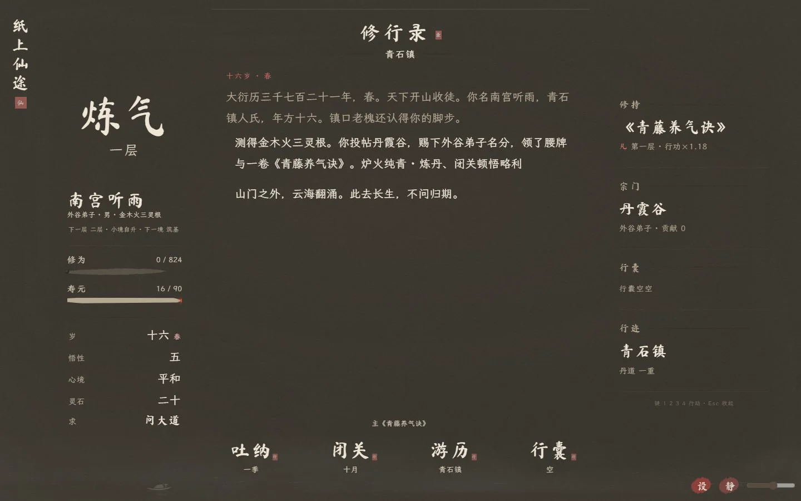
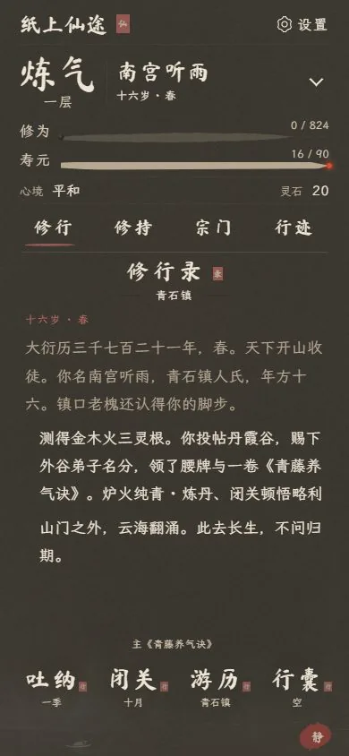

一纸落墨 · 半生修真
水墨纸笺上的修真人生；吐纳、游历、破境，都在一册摊开的修行录里。
Steam 买断 · 敬请期待 大约十八至二十五元，尚未开售
网页试玩，免费。
- 无需下载
- 纯静态网页。用浏览器打开，不必安装。
- 掌上能读
- 按 iPhone Safari 来写。竖屏握着看，字也可以放大。
- 断网可续
- 可以加到主屏幕。这一卷载入之后，没有网也能接着翻。
截图
游历
几张已经摊开的纸。桌面与掌上，是同一卷。








玩法
破境
不比手速。你写下选择，光阴便挪一截。坐着吐纳，或推门出去，都算过了一段人生。
-
一
灵根
开卷先定灵根。金、木、水、火、土，或偏或匀，吐纳的深浅从这里起。
-
二
宗门
可以拜入山门，也可以做散修。门派性情不同，同门各有名字，各有去向。
-
三
山水
江湖是一幅往两边展开的长卷。走过的路用淡墨记住，你站的地方点一粒朱砂。
-
四
奇遇
路上会遇见人、兽与坊市。一句选择，有时要过许多年才回来。
-
五
故人
有人可以同行。相处写在日子里。先走的人，不再被写成新的事。
-
六
红尘
也可以在凡间开一间铺，看一口碑慢慢长出来。修的是长生，过的仍是日子。
-
七
终卷
寿元会走完。破境、止步，或把这一世留在纸上。再开一卷时，从前见过的，还在。
开卷是新的一生，续卷接着上次。存档留在这台设备上，一共三卷；抄下存档码，就能带到另一处浏览器。图鉴、日缘和试炼，也在卷首。
更新
近讯
这一卷写到 v109。卷上短句与掌上清读，近讯接着往下写。
-
v109近讯续写
官网近讯写到这一版，卷首试玩钮与修行录短句更舒展。
-
v108卷上短句
拜山、吐纳与此生所求，卷上措辞更简净了。
-
v107掌上清读
修行录里的年纪与短句，读来更连贯。
-
v106同纸
试炼、存档和图鉴，也在同一张纸上。夜墨里，墨童仍是一笔墨。
-
v105墨童闲录
卷首多了一笺闲录。点墨、置办、心法，墨干了可以再落一墨。不与正传存档相通。
-
v104同纸揭笺
奇遇从这张纸上揭开，不再另起一页。对手写在纸面，右边仍留朱印。
-
v103淡墨留边
奇遇、地图和纸笺收成一道淡墨。掌上的设与静留在画面里。
-
v102灵石留白
测灵根后隐去右侧长条，仍可翻看完整结果。
-
v101触石回卷
吐纳墨气自然散尽。修行时可直接回到卷首，测灵根只需轻触灵石。
-
v100纸中显墨
开卷时山水隐进同一张纸，字在原处显清。续卷先看见上次的年月。
-
v99旧墨续写
新页仍写在这张纸上。续卷时，姓名与境界先归入命籍。
-
v98从容开卷
题额、落墨成舟、山河展开，节奏放缓。看够了，点一下或按键即可跳过。
-
v95一纸修行
主卷与卷首共用底纸。拿掉木轴和厚重装饰，只留淡墨的边。
-
v93山水画卷
桌面并列三栏。手机收成四个页签，人物可以展开再看。
-
v90纸边
主卷顶上不再贴山河图。人物与日志改成淡墨纸边。
-
v80卷面清楚
同一年里的同一件事只留一笔。铺子进了货，货架不自己合上。
-
v72灯在人间
红尘可以开铺、立祠。口碑和正邪分开记。